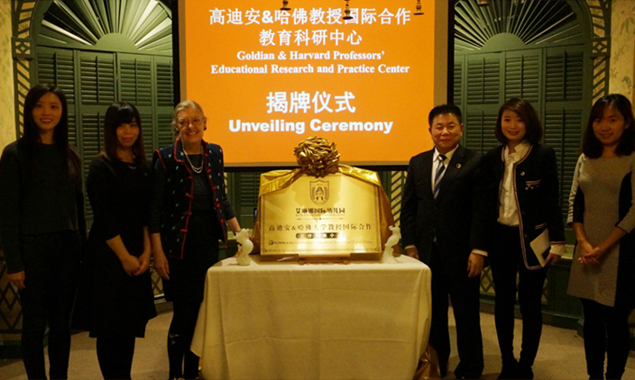
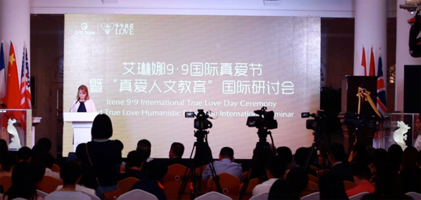
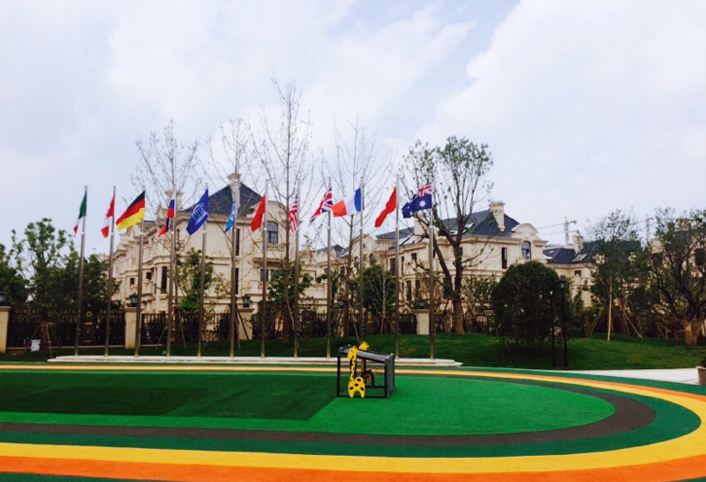
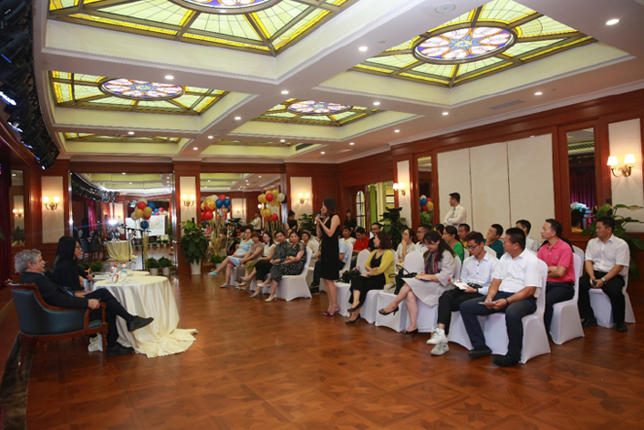
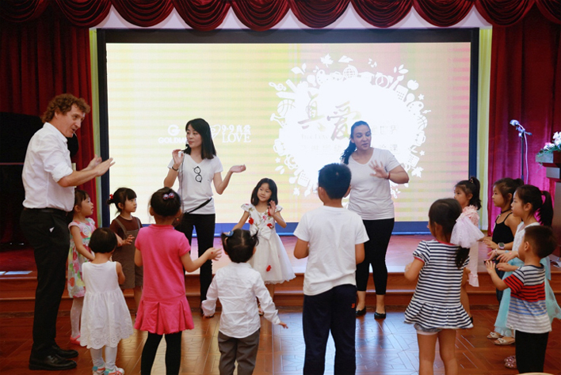
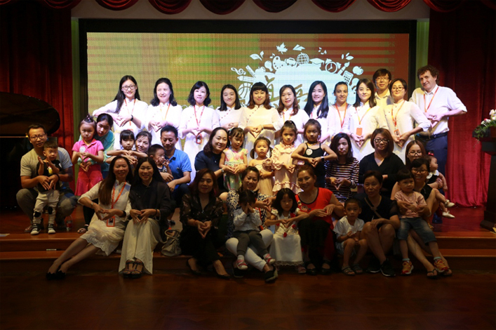

-
- 高迪安在全新 的企业发展战略规划制定中，把国际教育发展战略放在集团国际化发展的重要位置。 引进世界最优质资源，和世界知名学府——哈佛大学教授达成战略合作。成立“高迪安&哈佛大学教授国际合作教育科研中心”，专注于中国学前教育和青少年发展课题的研究与实践。

- 高迪安&哈佛教授国际合作教育科研中心”由美国哈佛大学、加拿大卡尔加里大学、中国华东师范大学的资深教授为主要的跨国研究团队，以学前儿童与青少年教育国际化为主要研究方向，交流全球化背景下全新的教育模式。
- 
- 高迪安董事长顾文元先生与美国哈佛大学教育学院Catherine E. Snow教授（凯瑟琳E.斯诺教授）、Robert L. Selman教授（罗伯特 L. 塞尔曼教授）、加拿大卡尔加里大学赵旭教授共同为“高迪安&哈佛教授国际合作教育科研中心”揭牌。

- 全球教育专家齐聚国际研讨会 热议“真爱人文教育”新理念
- 2017年9月9日，一场由高迪安&哈佛大学教授国际教育科研中心主办的“真爱人文教育”国际研讨会，在金大元·御珑宫廷隆重召开，以“真爱连通世界”为主题，献礼2017年艾琳娜9·9国际真爱节。
- 
-
- 华人国际幼儿园典范
- 高迪安旗下以哈佛大学学术队伍为依托的高端国际幼儿教育机构，倡导服务于儿童的健康成长，促进中国乃至世界儿童教育的进步。

- 学术教育名师包括：哈佛大学教育研究院最高级别的格雷厄姆首席教授Catherine E. Snow；哈佛教育学院的教育和人类发展领域的罗伊·爱德华·拉森级别教授Robert L. Selman；加拿大卡尔加里大学博士后、原哈佛大学博士赵旭教授；世界学前教育协会中国区主席、华大师范大学教育学部资深周兢教授等。
- 

- 哈佛教授家长沙龙
- 2017年9月8日，科研中心的两位资深研究顾问——哈佛大学塞尔曼教授、卡尔加里大学赵旭教授，在艾琳娜幼儿园与家长们进行了一次面对面的近距离沙龙,让家长在学前教育和儿童身心上的发展有了全新的理解。
- 
- 艾琳娜幼儿园亲子体验活动
- 2017年9月9日、10日,艾琳娜幼儿园特别为学龄前儿童准备了丰富而精彩的体验课，双语教学模式、国际一流的教学环境，让小朋友们和家长们体验到了不一样的真爱人文课堂。
- 
- 未来，科研中心将高迪安集团创办的艾琳娜幼儿园作为研究实验基地，并对其进行全方位的学术指导。
- 